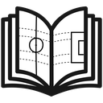

Drag to orbit · scroll to zoom
Tactics Board needs more room than this preview window. Open the link in Safari or Chrome for the full board.
Open board
What would you like to know?
Disclaimer: Search is in development. Things may not work properly. If you encounter an issue, contact us.
Sign in to use search for free. No credit card required. By continuing, you agree to our Privacy Policy and Terms of Service.
Continue to your Tactics Journal account.
No credit card required. By continuing, you agree to our Privacy Policy and Terms of Service.
Sign in as @kyleboas via dashboardRecent changes to the Tactics Journal board.
Improved
Styles opens on the part you are working on, so the controls for a zone, an arrow and a label no longer share one crowded shelf.
New
Orbit the pitch with a finger and keep editing the live board while you turn it. Pinch to zoom in on a phase and see the shape from the touchline.
Reshaping an oval or a triangle works the same way as reshaping a box, with the same handles in the same places.
The last project and the last board are remembered separately, so reopening the board puts you back where you left off.
Squads read in number order, so finding a player is a glance instead of a scan.
Draw an arrow and it bends the way most passes and runs do, without a trip to the curve settings.
Drag to orbit · scroll to zoom
For the best mobile experience, add Tactics Board to your Home Screen. In Safari, tap Share, then Add to Home Screen. In your browser, open the menu, then tap Add to Home screen.
Players. Open Players in the bottom menu, then tap + Player for a single dot or + XI for a full lineup. Set your clubs under Teams in Settings to load real squads and kit colors.
Edit a dot. Tap a player to pick a name from the roster, set the shirt number, and change its color. Drag any piece to move it; select it for resize handles.
Icons, arrows, zones, text. Pick the tool in the bottom menu, then tap or drag on the board. Use Icons → Measure for a straight measuring line anywhere; it has no middle bend handle.
View. Pinch or scroll to zoom, drag the empty pitch to pan. The icon row above has export, fit view, undo, redo and new board. Use the camera button to bring a broadcast screenshot onto the live board.
Boards. Keep unlimited projects and saved boards on this device. Open Boards in Settings to name, load, delete, or move them to another device.
Privacy. Board sends first-party aggregate counters for editor opens, exports, pricing, checkout starts, and free backup. These counters contain no IP address, account ID, visitor ID, URL, referrer, cookies, or arbitrary text and are kept for 14 months. We use no advertising, third-party analytics, or cross-site tracking cookies.
Data sources. Team search and kit colors use TheSportsDB public API. Squad names, shirt numbers and positions are read from current squad sections on Wikipedia through the Wikipedia API. Third-party data may be incomplete, delayed or inaccurate; verify it before publishing.
Copyright. Except for identified third-party materials, the software and bundled assets are available under the MIT license. Club names, player names, colors and other source data remain the property of their respective owners and data providers. Tactics Journal and Tactics Board names and logos are reserved trademarks.
Interface icons. The icons in Settings and the menus are Tabler Icons, copyright Paweł Kuna, used under the MIT license. The full license text is served at /LICENSE-icons.
Hosted service. You may use exported board images for editorial, educational, social, internal and commercial work. Where an export uses Tactics Journal pitch artwork, the Tactics Journal watermark must remain visible. An export built on your own uploaded background or imported screenshot adds no branding to the image itself. If you add the Tactics Journal scoreboard, that scoreboard includes its logo and domain. Use of the official hosted service is subject to the Terms of Service, Privacy Policy and Cookie Policy.
Board is open source. Except for identified third-party materials, the software and bundled non-trademark assets are MIT licensed, so you can build the board and serve it from your own machine or domain.
git clone https://github.com/TacticsJournal/board.git
cd board
npm install
npm run build:self-hosted
Then serve the dist folder on localhost or your own HTTPS domain. To work on the board with Vite instead, run BOARD_SELF_HOSTED=true npm run dev.
public/extensions run in your build. The official hosted board does not run third-party extensions.
Every local editing and export feature is free. Pro adds automatic cloud sync, version history, collaboration, sharing controls, and agent access.
Pro is active.
Manage or cancel on Tactics Journal$12.99/month
Billed yearly at $155.88Save $24 versus monthly
Pro is active.
Manage or cancel on Tactics JournalExisting Hosted Board License holders keep their access and can upgrade to Pro.
Full refund within 14 days of your first payment or of an automatic yearly renewal.
https://board.tacticsjournal.com/mcp
Use this same server URL for every board. It grants no board access on its own.
Menus may move. See Claude help and ChatGPT help.
Ask Claude or ChatGPT to make the session. It returns an Add to Projects link. Open that link to review and save the project; no agent link is needed.
Open the project, choose Share, then Invite an agent, and paste that link into the conversation. The link lasts 24 hours and covers only that project.
Instructions your agent follows when creating or editing this project.
For example, a skill can tell an agent to always use dashed arrows for defensive runs.
Bundled with Board and available on hosted and self-hosted builds. These controls stay on this device.
Your own sandboxed extensions are available only when you self-host Board.
Describe the problem and what you expected to happen.
Every pitch style, screenshot import, cone, goal, and custom background is free.
Colours, thicknesses and sizes are remembered per pitch, so a broadcast board can start white while a drawn pitch starts dark. New boards on this pitch start here; the ones you have drawn stay as they are.
Add a photo, a broadcast still or a training-ground shot. Each one is saved here, and the board takes its shape.
Nothing here yet. Add one from the plus at the end of any row in the Shapes shelf, or here. Select several shapes on the board and the link button saves them as one.
Export the file here, then import it from this screen on the other device.
Home vs Away starts a kickoff board from the teams you have set. The board on screen is saved here automatically before a new one starts.
The controls above the board, in the order they appear there. Anything switched off moves into the menu rather than away, and the menu itself stays put.
You can change this later from the tile.